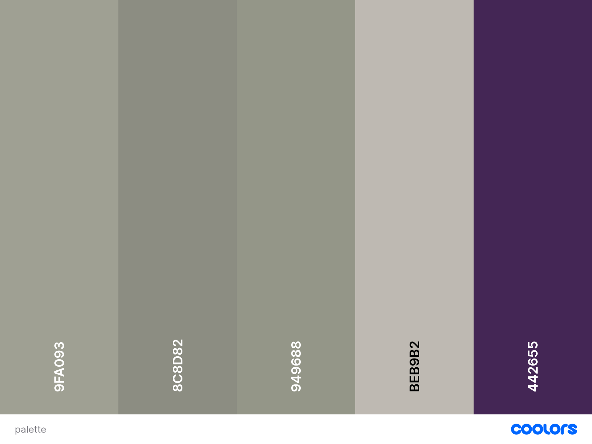

Color schema
Typography
The font families that I will be using on this page is Akronim for the medium and large pages for my h1. For the nav bar and paragraphs itself I will be using Ubuntu the h2 will be used with the Lora.
The reason I am using the Lora on the H1 in the small view is because the way the Akronim would look you wouldn't get a good feel of the page.